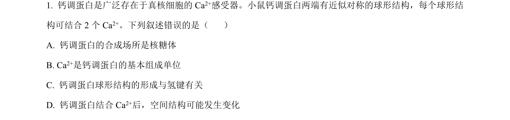
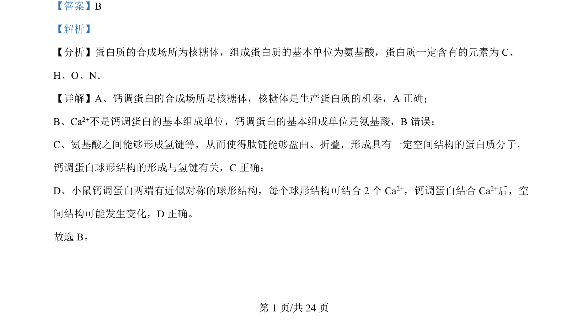

考点：蛋白质 氨基酸 氢键 空间结构

本题考察蛋白质的结构和组成，包括合成场所、基本单位、氢键与空间结构变化。

📄 原 PDF 第 1 页：
素材/真题/吉林/2008-2024·（吉林）生物高考真题/2024年高考生物试卷（辽宁）（解析卷）.pdf
【答案】B 【解析】 【分析】蛋白质的合成场所为核糖体，组成蛋白质的基本单位为氨基酸，蛋白质一定含有的元素为 C、 H、O、N。 【详解】A、钙调蛋白的合成场所是核糖体，核糖体是生产蛋白质的机器，A 正确； B、Ca2+不是钙调蛋白的基本组成单位，钙调蛋白的基本组成单位是氨基酸，B错误； C、氨基酸之间能够形成氢键等，从而使得肽链能够盘曲、折叠，形成具有一定空间结构的蛋白质分子， 钙调蛋白球形结构的形成与氢键有关，C正确； D、小鼠钙调蛋白两端有近似对称的球形结构，每个球形结构可结合 2 个 Ca2+，钙调蛋白结合 Ca2+后，空 间结构可能发生变化，D 正确。 故选 B。